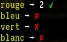
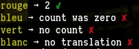
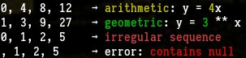

npm i stick-js # or yarn
cat >.babelrc <<EOT
{"presets": ["babel-preset-es2015", "stage-0"], "plugins": [
"babel-plugin-operator-overload"
]}
EOT
node_modules/.bin/babel -d lib src
node lib/<entry-file>.jsmodule: {
rules: [
{
test: /\.js$/,
exclude: /node_modules/,
use: {
loader: 'babel-loader',
options: {
presets: [[
"env",
{ "modules": false },
]],
plugins: [
'operator-overload',
]
}
},
},
...
]
...
}A way to start using the pipe (or 'stick') operator today while proposal TC39/proposal-pipeline-operator is still being fleshed out.
Note that we use |, not |>, which is not only easier to overload but
far more pleasant to work with, and which will still work even if/when the
proposal is accepted.
A toolkit of functions centered around this pattern, and a number of idioms which they facilitate.
You can use our functions, or your own favorite library (Ramda, lodash/fp, etc.), or mix and match as you like.
The overloading is made possible thanks to the great babel-plugin-operator-overload library by Jussi Kalliokoski (@jussi-kalliokoski).
A few examples:
import chalk from 'chalk'
; [1, 2, 3]
| map (x => x + 1)
| join ('/')
| chalk.green
| sprintf1 ('The answer is %s')
| log // outputs 'The answer is 2/3/4' (colorfully)const isInteger = x => x === Math.floor (x)
const ifInteger = isInteger | ifPredicate
; [3.5, 4, 4.2]
| map (ifInteger (
x => x + 1,
always ('nothing'),
))
// ['nothing', 5, 'nothing']const convertFahrenheit = fah => lets (
_ => (fah - 32) / 9 * 5, // (1) celsius
(cel) => cel + 273, // (2) kelvin
(cel, kel) => [cel, kel], // (3) result
)
convertFahrenheit (86) // [30, 303]const checkVal = condS ([
4 | eq | guard (sprintf1 ('%s was exactly 4')),
4 | lt | guard (sprintf1 ('%s was less than 4')),
4 | gt | guard (sprintf1 ('%s was more than 4')),
otherwise | guardV ("error, this shouldn't happen"),
])
; [3, 4, 5]
| map (checkVal)
| join (' | ')
// 3 was less than 4 | 4 was exactly 4 | 5 was more than 4// ------ dog.js
const proto = { speak () { 'Hi from ' + this.name }}
export default proto | factory
// ------ main.js
import Dog from './dog'
Dog.create ({ name: 'Caesar', }).speak () // 'Hi from Caesar'And much more.
// --- source files must begin with this header.
defineBinaryOperator ('|', (...args) => pipe (...args))
defineBinaryOperator ('<<', (...args) => compose (...args))
defineBinaryOperator ('>>', (...args) => composeRight (...args))
import {
pipe, compose, composeRight,
// --- /header
map, join, sprintf1,
} from 'stick-js'
import { green, } from 'chalk'
const { log, } = console
; [1, 2, 3]
| map (x => x + 1)
| join ('/')
| green
| sprintf1 ('The answer is %s')
| log // outputs 'The answer is 2/3/4' (colorfully)a | b is simply an equivalent way of writing b (a)
A really simple idea, with some pretty far-reaching consequences.
(What if I really want to do bitwise math, you ask? Don't worry, you still can: see below).
// --- reminder: source files must begin with this.
// --- from here on out we'll omit it in the examples.
defineBinaryOperator ('|', (...args) => pipe (...args))
defineBinaryOperator ('<<', (...args) => compose (...args))
defineBinaryOperator ('>>', (...args) => composeRight (...args))
import {
pipe, compose, composeRight,
map, join, split,
} from 'stick-js'
const multiply = x => y => x * y
const double = multiply (2) // or 2 | multiply
3 | double // 6
double (3) // 6
3 | multiply (4) // 12
const capitaliseFirstLetter = x => x[0].toUpperCase () + x.slice (1)
'just a perfect day'
| split (' ') // split (' ') is a function
| map (capitaliseFirstLetter) // map (capitaliseFirstLetter) is also a function
| join (' ') // ... you get the picture.
// 'Just A Perfect Day'All curried functions provided by stick-js can be called using either of 2 currying styles.
This would be a good time to read up on curried functions if you're not familiar with them.
we will refer to this sort of function and calling style as 'manual':
const f = a => b => c => a + b + c // call like f (1) (2) (3)and this sort as 'normal':
const g = R.curry ((a, b, c) => a + b + c) // call like f (1) (2) (3) or f (1, 2, 3)
// or f (1, 2, 3)
// or f (1) (2, 3)
// etc.Calling:
import { map, } from 'stick-js'
const double = x => x * 2
map (double, [1, 2, 3]) // [2, 4, 6] (normal style)
map (double) ([1, 2, 3]) // [2, 4, 6] (manual style)
; [1, 2, 3] | map (double) // [2, 4, 6] (manual style with stick)For extra performance you can also limit yourself to the manual style (see below).
We recommend using a space before the parentheses of a function call. Admittedly it looks pretty strange at first, but we find that it makes everything much clearer when you get used to it, in particular with the manual currying style.
You might also want to check out a vertical alignment plugin. The author
uses vim-easy-align by @junegunn.
import { sprintfN, sprintf1, } from 'stick-js'
3 | sprintf1 ('4 - 1 is %s') // '4 - 1 is 3''N' is a marker meaning an array is expected.
; [4, 3]
| sprintfN ('%s - 1 is %s') // same.'V' means a value is expected, to disambiguate cases where a function also fits.
import { timesV, timesF, } from 'stick-js'
const { random, } = Math
3 | timesV (4) // [3, 3, 3, 3]
random | timesF (4) // [<random-num>, <random-num>, <random-num>, <random-num>]
random | timesV (4) // [random, random, random, random]Note that the last one stores the function in the array.
random | timesV (4) | map (invoke) // [<random-num>, <random-num>, <random-num>, <random-num>]'M' means the data is being mutated. In JS we absolutely can not pretend everything is immutable and we work with mutable data all the time.
import { appendTo, appendToM, } from 'stick-js'
const a = [1, 2, 3]
const b = 4 | appendTo (a) // functional style: the array is cloned.
b === a // false
const a = [1, 2, 3]
const b = 4 | appendToM (a) // non-functional style: the array is mutated.
b === a // true
const webGLContext = { ... a complicated object ... }
webGLContext | mergeM ({ someProp: false, }) // you probably want mutable here.And there are a few more which we'll see along the way.
ok (x) is false if x is null or undefined. Every other input returns
true.
import { map, ok, notOk, ifOk, } from 'stick-js'
const { log, } = console
; [0, false, '', null, void 8]
| map (ok) // [true, true, true, false, false]
; [0, false, '', null, void 8]
| map (notOk) // [false, false, false, true, true]Something we see a lot in JS in the wild is:
let answer
if (someVar !== undefined && someVar !== null) {
answer = someVar + 1
} else {
answer = 'nothing'
}This can vastly improved using an 'anaphoric if' and a stick idiom:
import { add, always, } from 'stick-js'
const add1 = 1 | add // or add (1)
const answer = someVar | ifOk (add1, 'nothing' | always)Explanation: ifOk takes two functions -- a 'then' function and an 'else' function.
In the 'ok' case, the value being tested is passed to the function. (This
bound value is sometimes called an 'anaphor').
const add1IfYouCan = val => val | ifOk (
// `that` refers to `val`
that => that + 1,
// no value is passed.
_ => 'nothing',
)This can be further condensed, using 'point-free style' (see below) and the always function:
const add1IfYouCan = ifOk (1 | add, 'nothing' | always)Usage:
const answer = someVar | add1IfYouCan
; [0, 10, null, void 8]
| map (add1IfYouCan) // [1, 11, 'nothing', 'nothing']A common pattern is when the argument to a function is passed immediately into a pipe:
const add1IfYouCan = x => x | ifOk (add1, 'nothing' | always)Since x does not appear anywhere else in the expression, we can simply remove it, along with the function argument:
const add1IfYouCan = ifOk (add1, 'nothing' | always)This is often called 'point-free' style. It means the function arguments and the data being passed through the pipeline have been abstracted away (and has nothing to do with dots, despite the name).
If the pipe chain consists of more than 1 link …
const { dot, sprintf1, tap, }
const { log, } = console
const add1IfYouCan = x => x
| ifOk (add1, 'nothing' | always)
| String // conversion using type constructor
| dot ('toUpperCase')
| sprintf1 ('The answer is %s')
| tap (log) // outputs 'The answer is 1', 'The answer is NOTHING', ...… then we remove the x => x and change all the | to >>
const add1IfYouCan =
ifOk (add1, 'nothing' | always) // (1)
>> String // (2)
>> dot ('toUpperCase') // (3)
>> sprintf1 ('The answer is %s') // (4)
>> tap (log) // (5)The following pattern always holds:
a | b | c = a | (b >> c)So when the chains start to get long (as above), you can cut pieces out using this property. For example, you can refactor lines 2-4 into a new function:
// --- convert input to String, make uppercase, perform sprintf.
const processString = String
>> dot ('toUpperCase')
>> sprintf1 ('The answer is %s')And splice it back in:
const add1IfYouCan = x => x
| ifOk (add1, 'nothing' | always)
| processString
| tap (log)Or
const add1IfYouCan =
ifOk (add1, 'nothing' | always)
>> processString
>> tap (log)ifOk is a convenience for ifPredicate (ok) or ok | ifPredicate.
There is also a 'when' form, which has no 'else' branch.
import { add, whenOk, } from 'stick-js'
const add1 = 1 | add // or add (1)
3 | whenOk (add1) // 4
null | whenOk (add1) // undefinedThe selection of if and when functions we provide is intentionally skimpy, to encourage you to compose your own.
const { floor, } = Math
// --- predicate to match integers.
const isInteger = x => x === floor (x)
// --- or how about
// import { eq, } from 'stick-js'
// const isInteger = x => x | floor | eq (x)
// --- or if you're getting bored:
// import { timesV, asteriskN, passToN, } from 'stick-js'
// const arrowSnd = f => timesV (2) >> asteriskN ([id, f])
// const isInteger = arrowSnd (floor) >> passToN (eq)
// --- now compose it into an anaphoric if:
const ifInteger = isInteger | ifPredicate
// --- now use it:
const add1 = add (1)
; [3.5, 4, 4.2]
| map (ifInteger (add1, 'nothing' | always))
// ['nothing', 5, 'nothing']More complicated predicates:
// --- @todo use `allN`
const both = (f, g) => x => f (x) && g (x)
const isOdd = x => x % 2
const isOddInteger = both (isInteger, isOdd)
const ifOddInteger = isOddInteger | ifPredicate
; [3.5, 4, 5, 5.5]
| map (ifOddInteger (
add1,
'nothing' | always,
))
// ['nothing', 'nothing', 6, 'nothing']
; [3.5, 4, 5, 5.5] | map (isOddInteger)
// [false, false, true, false]Note that ifPredicate and whenPredicate match on truthiness, not strict
truth. Rationale: that is how the native filter works, and JS's if
operator, and many other tools in e.g. Ramda; and it's trivial to convert
a truthy expression to a strict one.
Our map function is capped at one argument, meaning the map routine only
gets the value and not the index or the collection.
import { map, addIndex, addCollection, } from 'stick-js'
; [4, 5, 6]
| map ((x, idx) => idx) // [undefined, undefined, undefined]But:
const mapWithIndex = map | addIndex
const mapWithCollection = map | addCollection
; [4, 5, 6]
| mapWithIndex ((x, idx) => idx) // [0, 1, 2]
; [4, 5, 6]
| mapWithCollection ((x, coll) => coll) // [[4, 5, 6], [4, 5, 6], [4, 5, 6]]
; [4, 5, 6]
| (map | addIndex | addCollection) ((x, idx, coll) => ...)
; [4, 5, 6]
| (map | addCollection | addIndex) ((x, coll, idx) => ...)We can also enhance our merge functions, to deal with conflicts:
import { mergeWith, mergeToSym, } from 'stick-js'
const chooseTgt = (src, tgt) => tgt
const chooseSrc = (src, tgt) => src
// --- choose target value on conflict
const mergeChooseTgt = mergeToSym | mergeWith (chooseTgt)
// --- choose source value on conflict
const mergeChooseSrc = mergeToSym | mergeWith (chooseSrc)
const os = { name: 'source name', }
const ot = { name: 'target name', }
os | mergeChooseSrc (ot) // 'source name'
os | mergeChooseTgt (ot) // 'target name'Or to only merge if certain conditions hold:
import { mergeWhen, eq, } from 'stick-js'
const { floor, } = Math
const isInteger = x => x | floor | eq (x)
const srcIsInteger = (src, tgt) => src | isInteger
const mergeToWhenSrcIsInteger = mergeToSym | mergeWhen (srcIsInteger)
const os = { val: 2.2, vil: 3, vol: 3.5, }
const ot = { val: 25, vil: 25, vol: 25, vel: 42, }
os | mergeTo (ot) // { val: 2.2, vil: 3, vol: 3.5, vel: 42, }
os | mergeToWhenSrcIsInteger (ot) // { val: 25, vil: 3, vol: 25, vel: 42, }(We're dying to see a port to Hungarian, too)
Once you master this, the usage becomes intuitive and greatly reduces the need to look things up.
(Motivation: what's the argument order of append, times, and subtract in your favorite library?)
import {
sprintfN, sprintf1, mergeTo, merge, prependTo, prepend,
appendTo, append, bindPropTo, bindProp, bindTo, bind, invoke,
} from 'stick-js'
const tgt = { thing: 'sandwich', want: 'no thanks', }
const src = { want: 'yes please', }When a function ends in a preposition, for example, ‘To’, the identifier to the right is the object of the preposition.
Read this as ‘merge src to tgt’
src | mergeTo (tgt) // { thing: 'sandwich', want: 'yes please', }The same function without the preposition means that the identifier to the right is the object of the verb ‘merge’.
Read this as: ‘merge src to tgt’
tgt | merge (src) // { thing: 'sandwich', want: 'yes please', }
4 | appendTo ([1, 2, 3]) // [1, 2, 3, 4]
; ([1, 2, 3]) | append (4) // [1, 2, 3, 4]
0 | prependTo ([1, 2, 3]) // [0, 1, 2, 3]
; ([1, 2, 3]) | prepend (0) // [0, 1, 2, 3]
const dog = {
name: 'Caesar',
speak () { return 'My name is ' + this.name },
}
const cat = {
name: 'Fritz',
speak () { throw new Error },
}
const f = 'speak' | bindPropTo (dog)
f () // 'My name is Caesar'
// --- 'bind prop "speak" to object'
'speak' | bindPropTo (dog) | invoke // same
// --- also 'bind prop "speak" to object'
dog | bindProp ('speak') | invoke // same
dog.speak | bindTo (dog) | invoke // same
// cat.speak () // Error
dog.speak | bindTo (cat) | invoke // 'My name is Fritz'
cat | bind (dog.speak) | invoke // 'My name is Fritz'
// --- 'call this function on this context', i.e., bind and call.
; ({}.toString) | callOn (3) // '[object Number]'
// --- 'provide this context to this function'
; 3 | provideTo ({}.toString) // '[object Number]'Note that this fits the a | b | c pattern:
dog.speak | bindTo (cat) | invoke // 'My name is Fritz'So we can also write it as a | (b >> c):
dog.speak | (bindTo (cat) >> invoke) // 'My name is Fritz'In fact bindTo (x) >> invoke is already provided under the name callOn,
and its inverse provideTo:
dog.speak | callOn (cat) // 'My name is Fritz'
cat | provideTo (dog.speak) // 'My name is Fritz'Some other miscellaneous examples.
// --- '3 to the 4th'
3 | toThe (4) // 81
// --- 'divide 3 by 6' or '3 divided by 6'
3 | divideBy (6) // 0.5
// --- 'divide 3 into 6'
3 | divideInto (6) // 2
// --- 'subtract 3 from 4'
3 | subtractFrom (4) // 1
// --- 'subtract 4 from 3'
3 | subtract (4) // -1
// --- '3 minus 4'
3 | minus (4) // -1import {
map, side1, appendM, append, prependM, prepend,
} from 'stick-js'Chaining with the . will often not do what you want.
; [2, 3, 4]
.push (5)
.unshift (1) // error, return value of previous line was 5But this will:
const push = 'push' | side1
const unshift = 'unshift' | side1The 1 in side1 refers to the arity of the function, i.e., the exact number of arguments it expects. When working with functions in this way it's important to specify this.
.push and .unshift, both methods of Array.prototype, expect exactly
one argument, hence side1 in both cases.
; [2, 3, 4]
| push (5)
| unshift (1) // [1, 2, 3, 4, 5]
// --- using stick functions for mutable data:
; [2, 3, 4]
| appendM (5)
| prependM (1)
// --- using stick functions for immutable data:
; [2, 3, 4]
| append (5) // new array [2, 3, 4, 5]
| prepend (1) // new array [1, 2, 3, 4, 5]You can insert tap anywhere in the chain, which is guaranteed not to mess
with the pipeline no matter what it returns:
const double = x => x * 2
; [1, 2]
| map (double) // [2, 4]
| tap (x => console.log (x)) // still [2, 4], performs side-effect (printing)
| tap (x => [100, 200]) // still [2, 4], for demonstration only
| join (',')
// '2,4'Without the first tap, this would have been an error, because
console.log returns undefined.
tap is useful to signal the intention of performing side effects or IO. It
is also really useful for debugging. And our side family of functions use
tap under the hood.
import {
factory, factoryProps,
factoryStatics,
} from 'stick-js'
// --- dog.js:
const proto = {
init () {
...
return this
},
breathe () { return 'huff' },
whoami () { return this.name },
getType () { return this.type },
}
const props = {
type: 'dog',
name: undefined,
}
// --- basic:
export default proto | factory
// --- variants:
export default proto | factory | factoryProps (props)
export default proto | factory | factoryStatics ({ ... }) | factoryProps (props)
// ------ main.js
import Dog from './dog'
const dog = Dog.create ()
// const dog = Dog.create ().init () // useful in practice
dog.breathe () // 'huff'
dog.type // 'dog', if `factoryProps` used
dog.getType () // 'dog', same
dog.whoami () // undefined, because no default.
const dog2 = Dog.create ({ name: 'garfunkel', })
dog2.whoami () // 'garfunkel', thanks to args to create// ------ animal.js:
import {
factory, factoryStatics, mixinM, mixinPreM,
factoryProps,
ifPredicate,
} from 'stick-js'
const isOdd = x => x % 2 !== 0
const ifOdd = isOdd | ifPredicate
// --- a 'base' object (animal)
const proto = {
init () {
...
return this
},
move () {
return this.numLegs | ifOdd (
_ => 'hobble',
_ => 'gait',
)
},
breathe () { return 'huff' },
speak () { 'not implemented' | die },
getType () { return this.type },
}
const props = {
type: 'animal',
numLegs: undefined,
}
export default proto | factory | factoryProps (props)
// ------ cheater.js:
// --- some orthogonal functionality
const proto = {
cheat: howMuch => 'I cheat ' + howMuch,
}
export default proto | factory
// ------ dog.js:
import {
sprintf1,
factory,
} from 'stick-js'
import Animal from './animal'
import Cheater from './cheater'
const { proto: animalProto, } = Animal
const { proto: cheaterProto, } = Cheater
// --- a composite object (dog), extended from animal, with extra functions mixed in.
const proto = {
init () {
...
return this
},
speak () { return this.name | sprintf1 ('Dog %s says woof') }
}
const props = {
type: 'dog',
numLegs: 4,
name: undefined,
}
export default proto
| mixinPreM (animalProto)
| mixinM (cheaterProto)
| factory
| factoryProps (props)
// ------ main.js
import Dog from './dog'
const dog = Dog.create ({ name: 'garfunkel', })
// const dog = Dog.create ({ name: 'garfunkel', }).init () // with init
dog.breathe () // 'huff' (from animal)
dog.getType () // 'dog' (function from animal, property from dog)
dog.speak () // 'Dog garfunkel says woof' (function from dog, property from instance initialisation)
dog.cheat ('a bit') // 'I cheat a bit' (from cheater)Stick idioms:
const breathe = dot ('breathe')
const getType = dot ('getType')
const speak = dot ('speak')
const cheat = dot1 ('cheat')
const init = side ('init')
const create = dot1 ('create')
const dog = Dog
| create ({ name: 'garfunkel', })
| init
dog | breathe
dog | getType
dog | speak
Dog | create ({ name: 'garfunkel', })
| init
| cheatWe provide a functional style for working with objects the way JS was
designed to: using prototypical inheritance and Object.create. We hope to
show you that the new keyword and 'classes' and all the baggage they bring
are unnecessary, and that they obfuscate the way that it actually works.
We provide a simple abstraction for factories, with as little sugar and magic as possible, and encourage you to mix and match the components to do exactly what you need.
To recap: you create an object in JS by first building a prototype object, consisting of only functions.
const animalProto = {
breathe () { return 'huff' },
speak () { throw new Error },
...
}To make an animal instance, you pass this prototype object to Object.create,
then assign properties. If you wish you can treat one of these instances as
a prototype for a new kind of object, a dog for example, copy in some
more functions, use Object.create again, and so on.
We encapsulate this process with the notion of a factory, which is an object which knows how to spawn objects of a certain type.
import { factory, } from 'stick-js'
const animalProto = {
breathe () { return 'huff' },
speak () { throw new Error },
...
}
const Animal = animalProto | factory // other idioms might call it `animal` or `animalFactory`
const animal1 = Animal.create ()
const animal2 = Animal.create ()
animal1.breathe () // 'huff'
animal2.breathe () // 'huff'
animal2.speak () // ErrorTo add properties:
const animalProps = {
type: 'animal',
size: undefined,
numLegs: undefined,
}And we recommend always having an init method, which you will almost certainly
need. myFactory.create ().init () becomes a well-worn pattern.
const isOdd = x => x % 2 !== 0
const ifOdd = isOdd | ifPredicate
const animalProto = {
init () {
...
return this
},
breathe () { return 'huff' },
speak () { throw new Error },
move () {
return this.numLegs | ifOdd (
_ => 'hobble',
_ => 'gait',
)
},
}
const Animal = animalProto | factory | factoryProps (animalProps)On create, the properties which are 'ok' will get copied in to the new
object.
The others are there for documentation: put them here, not peppered
throughout the methods. Do use undefined for props that are waiting to be
defined, which is arguably better than null and definitely better than
false. Use void 8 or your very own favorite number to impress … no one.
const animal = Animal.create ().init ()
animal.type // 'animal'
animal.size // undefinedYou can pass an object to create to initialise properties. These will be
copied in after the props that were passed to factoryProps are.
const bigBiped = Animal.create ({ size: 'big', numLegs: 2, }).init ()You can also eliminate the dots entirely:
const create = dot1 ('create')
const init = side ('init')
const move = dot ('move')
const speak = dot ('speak')
Animal | create ({ size: 'small', numLegs: 2, })
| init
| move // 'gait'Note that by using side for init we are assured that the instance is
passed down through the pipe and not the return value of init (although in
this case, init returns this, so dot would have worked too.) create
and move definitely need dot and not side.
To extend Animal to the obligatory Dog find the Animal prototype
(if animalProto is not in scope).
const animalProto = Animal.protoOr
const animalProto = Animal.create ().__proto__ // might not be available in all runtimesCreate it, add dog methods, and make a new factory:
const dogProto = animalProto
| Object.create
| mergeM ({
speak () { return this.loud ? 'WOOF' : 'woof' },
})
const dogProps = {
numLegs: 4,
loud: undefined,
}
const Dog = dogProto | factory | factoryProps (dogProps)
; [true, false]
| map ((loudness) => Dog
| create ({ loud: loudness, })
| (dog => [dog.speak (), dog.breathe (), dog.move ()])
)
// [['WOOF', 'huff', 'gait'], ['woof', 'huff', 'gait']]Note that we can call methods of both Animal and Dog now.
const Dog = dogProto | mixinM (animalProto) | factory | factoryProps (dogProps)Working with mixins is tricky. At some point, there will be namespace conflicts and it's not always obvious which version should win out -- and you have to decide how you want to deal with that.
But you have all the tools now to specify exactly how you want it to work. Now you have what JS is known for giving you a lot of: freedom.
const Dog = dogProto | mixinPreM (animalProto) | factory | factoryProps (dogProps)
const dog1 = Dog | create ({})
dog1 | breathe // 'huff'
const Dog = dogProto | mixinPreM (animalProto) | factory | factoryProps (dogProps)
Dog.create ({}) | speak // 'woof'We mixed the animal into the dog as a 'pre' mixin, meaning that on name
conflicts, Dog's version will win. If we had used mixinM instead of
mixinPreM:
const Dog = dogProto | mixinM (animalProto) | factory | factoryProps (dogProps)
Dog | create ({})
| speak // Error, this is Animal's version.Non-pre mixins are useful for orthogonal functionality -- something like logging, for example.
You can add as many pre and post mixins as you like.
dogProto | mixinPreM (...) | ... | mixinM (...) | ... | factoryOr use the 'N' versions to provide an array:
dogProto | mixinPreNM ([a, b, c]) | mixinNM ([d, e, f]) | factoryNote the 'M' marker on the mixin functions. This is to make clear that these functions mutate the prototype object, which might be a bit surprising when using this style. We do not provide non-M versions of the mixin functions, because it's not obvious exactly what the semantics should be, as several alternatives could be equally intuitive.
Should the prototype chain be flattened? Should it be discarded, leaving only the own keys? Should it create a new object using and mutate it?
You can specify these behaviors explicitly:
dogProto | flattenPrototype | <mixin functions ...> |
dogProto | discardPrototype | <mixin functions ...> |
dogProto | Object.create | <mixin functions ...> |You can consolidate a number of assignment statements into a single let expression, and also limit the scope of the assignments in a way which is easy to read. Code which is more expression-heavy can often be much easier to follow at a glance & refactor, especially considering that each statement is a possible side-effect inducing timebomb.
// --- convert a celsius value to both fahrenheit & kelvin.
const convertCelsius = (c) => letV (
c / 5 * 9 + 32, // fahrenheit
c - 273, // kelvin
(fah, kel) => [fah, kel],
)letV takes an arbitrary number of values, and expects the last one to be a
function. It simply passes the values in order to the function.
There is an 'N' form (letVN, which takes an array of values and one
function).
Far more useful is lets and letS. (Think 'let*' in racket).
If we went the other way:
// --- convert fahrenheit to celsius & kelvin
const convertFahrenheit = (f) => letV (
(f - 32) / 9 * 5, // celsius
(f - 32) / 9 * 5 + 273 // kelvin
(cel, kel) => [cel, kel],
)We see that we are wasting work. With lets, it would be:
// --- convert fahrenheit to celsius & kelvin
const convertFahrenheit = fah => lets (
_ => (fah - 32) / 9 * 5, // (1) celsius
(cel) => cel + 273, // (2) kelvin
(cel, kel) => [cel, kel], // (3) result
)lets expects each line to be a function. The first line is called with no
argument. The result (1) is passed as the argument to (2). (1) and the
result of (2) are passed as the arguments to (3), and so on. The result of
the last function is the result of the expression.
(For now, there can be up to 6 lines. See below for a generic version).
And of course there is a stick version of lets called letS. Think of the
'S' marker as 'stick enabled' and the 's' as 'stick disabled'. letS
expects a value to be piped in. Note: the 'S' marker implies the 'N'
marker: the arguments must be an array, or else it would be impossible to
curry.
const convertFahrenheit = fah => fah | letS ([
(fah) => (fah - 32) / 9 * 5, // (1) celsius
(fah, cel) => cel + 273, // (2) kelvin
(fah, cel, kel) => [cel, kel] // (3) result
])This wouldn't be the most natural use of letS, but it shows how it works:
Function (1) receives as a single argument the piped in value (fah in this case).
Function (2) receives fah, and the result of (1). (3) receives fah, the
results of (1) and (2), and so on.
By now we know that we can remove fah => fah | from the first line to
make it point-free, and we can use underscores to indicate ignored values:
const convertFahrenheit = letS ([
(fah) => (fah - 32) / 9 * 5,
(_, cel) => cel + 273,
(_, cel, kel) => [cel, kel],
])As an exercise you could try to make the entire expression as point-free as possible, at the expense of everyone's sanity:
import { letS, minus, divideBy, multiply, add, arg1, list, tail, } from 'stick-js'
const convertFahrenheit = letS ([
minus (32) >> divideBy (9) >> multiply (5),
arg1 >> add (273),
list >> tail,
])
convertFahrenheit (86) // [30, 303]import { tryCatch, } from 'stick-js'
const dubiousFunction = ...
dubiousFunction | tryCatch (
// --- no exception: `v` is the return value of `dubiousFunction`
(v) => ...,
// --- exception thrown: `e` is the exception
(e) => e | decorateException ('Dubious function said:')
)Sometimes it's nice to rethrow an exception, with a string prefixed to it so you can tell what went wrong:
(e) => e | decorateException ('Dubious function said:') | die
const throwError = reason => reason
| exception // new Error (reason)
| raise // throw it
const throwError = reason => reason | (exception >> raise)
// `exception >> raise` is also known as `die`Note that this is illegal in JS, because throw is not an expression:
const throwError = reason => throw new Error (reason)But we can trick it like this:
const throwError = reason => reason | die
// or just
// const error = dieNow we can improve this common code:
let answer
try {
answer = dubiousFunction ()
} catch (e) {
console.warn (e)
answer = 'bad news'
}Like this:
const answer = dubiousFunction | tryCatch (
plus (10),
(e) => {
e | decorateException ("That didn't go well")
| console.warn
return 'bad news'
},
}Or perhaps:
const answer = dubiousFunction | tryCatch (
plus (10),
decorateException ("That didn't go well")
>> tap (console.warn)
>> ('bad news' | always)
)import {
cond, condN, condS, guard, guardV, sprintf1, otherwise,
} from 'stick-js'Naive form:
cond (
[3 === 4, _ => 'strange'],
[3 === 5, _ => 'even stranger'],
[null, _ => 'ok'],
)An arbitrary number of lines can be provided.
With a stick idiom:
cond (
(_ => 3 === 4) | guard (_ => 'strange'),
(_ => 3 === 5) | guard (_ => 'even stranger'),
otherwise | guard (_ => 'ok'),
)If the guard functions return simple expressions, guardV can be more
convenient:
cond (
(_ => 3 === 4) | guardV ('strange'),
(_ => 3 === 5) | guardV ('even stranger'),
otherwise | guardV ('ok'),
)The most useful version is condS. Remember, 'S' implies 'N', so give it an
array.
const checkVal = val => val | condS ([
eq (4) | guard (val => val | sprintf1 ('%s was 4')),
lt (4) | guard (val => val | sprintf1 ('%s was less than 4')),
gt (4) | guard (val => val | sprintf1 ('%s was more than 4')),
otherwise | guardV ("error, this shouldn't happen"),
])Cleaning it up a bit, and inverting the parentheses in the test expressions:
const checkVal = condS ([
4 | eq | guard (sprintf1 ('%s was 4')),
4 | lt | guard (sprintf1 ('%s was less than 4')),
4 | gt | guard (sprintf1 ('%s was more than 4')),
otherwise | guardV ("error, this shouldn't happen"),
])Wut?! This does work, strange as it looks. Try it for yourself:
; [3, 4, 5] | map (checkVal) | join (' | ') // 3 was less than 4 | 4 was 4 | 5 was more than 4
We provide regex functions which fit the idiom and mostly have an 'X' in the
name (think /x if you know perl).
These are 'extended regexes', in which whitespace is ignored. Note that we
do not skip comments in the regex, only whitespace, even inside character
classes. Use \s if you really want to match on whitespace.
'egbert' | xMatch (/ (eg) (..) [rs] /)
// [ 'egber', 'eg', 'be', index: 0, input: 'egbert' ]
const vowels = []
const mapper = appendToM (vowels)
'egbert druppelvanger' | xMatchGlobal (/ [ae] /) (mapper)
vowels // [ 'e', 'e', 'e', 'a', 'e' ]
'egbert' | xMatchStr (' (eg) (..) [rs] ')
// [ 'egber', 'eg', 'be', index: 0, input: 'egbert' ]
'egbert\ndruppelvanger' | xMatchStrFlags (' ^ d ') ('s')
// null
'egbert\ndruppelvanger' | xMatchStrFlags (' ^ d ') ('m')
// [ 'd', index: 7, input: 'egbert\ndruppelvanger' ]
const toUpper = dot ('toUpperCase')
const ifReplaceVowels = ifXReplace (/ ([aeiou]) /) ('x')
'egbert' | ifReplaceVowels (toUpper) ('bad' | always)
// XGBXRT
const ifReplaceVowelsGlobal = ifXReplace (/ ([aeiou]) /g) ('x')
'egbert' | ifReplaceVowelsGlobal (toUpper) ('bad' | always)
// XGBXRT
const ifReplaceVowelsGlobalAlt = ifXReplaceStrFlags (' ([aeiou]) ') ('g') ('x')
'egbert' | ifReplaceVowelsGlobalAlt (toUpper) ('bad' | always)
// XGBXRTWe provide 8 basic merge functions, corresponding to all combinations of three binary choices:
There are a few conventions to keep in mind when trying to understand the semantics. To vs. from is just a question of switching the arguments, so we don't need to discuss it, but the other 4 combinations have some caveats.
tgt | merge (src) // (1) own, immutable
tgt | mergeIn (src) // (2) in, immutable
tgt | mergeM (src) // (3) own, mutable
tgt | mergeInM (src) // (4) in, mutable
// mergeTo, mergeInTo, mergeToM, mergeInToM: 'to' formsIn the immutable cases, a clone is made of the target before merging. You must keep in mind whether the clone will use only 'own' properties or also the prototype ('in') properties. Case (1) corresponds to 'own' and case (2) to 'in'.
No matter which it is, all copied properties will become own properties of the clone.*
Then, properties are copied over from the source: only own properties in case (1), also 'in' properties in case (2).
The rule to remember in the immutable case is: 'own' merges with 'own' and 'in' with 'in'.
In the mutable case, the target object is not cloned nor altered in any way, except of course that properties are copied in from the source. In particular this means that the 'own' in case (3) only applies to the source: the prototype chain of the target will not be flattened or discarded or altered at all.
The rule to remember in the mutable case is: the target is never altered in any way, besides having properties copied in. So the 'own' / 'in' distinction only applies to the source.
We feel that these conventions are the most straightforward and lead to easily inferrable behavior.
In all cases, we are only ever talking about enumerable properties.
* This is good enough for most styles of functional programming in JS, many
of which don't even bother with the distinction. People often expect
shallow, cheap objects when programming this way. If you absolutely must
preserve the prototype chain intact, you'll have to find a way to clone it
yourself, then use the 'M' versions of our merge functions on your cloned
object. You might also get away with using Object.create on it first,
which will of course create one more link in the prototype chain.
import { path, prop, whenTrue, always, } from 'stick-js'If you use react/redux, perhaps with saga, chances are your modules end in something like this:
const withConnect = connect(mapStateToProps, mapDispatchToProps);
const withReducer = injectReducer({ key: 'home', reducer });
const withSaga = injectSaga({ key: 'home', saga });
export default compose(
withReducer,
withSaga,
withConnect,
)(HomePage);We should see by now that this composing of functions, invoked upon a single value, is exactly our pipe pattern. So why not:
export default HomePage
| connect (mapStateToProps, mapDispatchToProps)
| injectSaga ({ key: 'home', saga, })
| injectReducer ({ key: 'home', reducer, })And maybe you call actions using a structure like:
export function mapDispatchToProps(dispatch) {
return {
onChangeUsername: (evt) => dispatch(changeUsername(evt.target.value)),
};
};Why not:
export const mapDispatchToProps = (dispatch) => ({
onChangeUsername: path (['target', 'value'] >> changeUsername >> dispatch,
})Try it yourself and see :D
If you use styled components, perhaps you pass optional props in. Checking
for the presence of the props can be annoying, so how about:
const SomeElementS = styled.div`
top: 5%;
left: 5%;
${ prop ('width') >> whenOk (sprintf1 ('width: %spx;')) }
${ prop ('height') >> whenOk (sprintf1 ('height: %spx;')) }
${ prop ('error') >> whenTrue ('color: red;' | always) }
`
<SomeElementS width='100%' error={true} />If you use saga, perhaps you have something like this:
export function* getRepos() {
const username = yield select(makeSelectUsername());
const requestURL = `https://api.github.com/users/${username}/repos`;
try {
const repos = yield call(request, requestURL);
yield put(reposLoaded(repos, username));
} catch (err) {
yield put(repoLoadingError(err));
}
}How about this:
export function* getRepos () {
const username = yield makeSelectUsername () | select
const requestURL = username | sprintf1 ('https://api.github.com/users/%s/repos')
try {
const repos = yield call (request, requestURL)
reposLoaded (repos, username) | reposLoaded | put
} catch (err) {
yield err | repoLoadingError | put
}
}Try it yourself and see :D Note that we can't use our tryCatch function
here, because of the yield in the catch clause.
If you use reselect, this is fine:
const selectHome = (state) => state.get('home');
const makeSelectUsername = () => createSelector(
selectHome,
(homeState) => homeState.get('username')
);But how about this:
const get = dot1 ('get')
const selectHome = get ('home')
const makeSelectUsername = () => createSelector (
selectHome,
get ('username'),
)When composing selectors, something like this works nicely to make sure the one being composed is valid:
export const makeSelectBooks = _ => createSelector (
selectHome,
get ('books'),
)
export const makeSelectBookTitles = _ => createSelector (
makeSelectBooks (),
'titles' | get | whenOk,
)The author uses stick idioms to slay a common front-end pattern. When you're
fetching your list of todos, the list should be undefined when it hasn't
been set yet, and empty only if it has been fetched and really is empty.
This makes testing easier, avoids weird flickers, lets you show a spinner,
etc. It does introduce an extra condition you need to test for in your code,
but we can handle this nicely:
const ListS = styled.div`
min-height: 150px;
`
const List = ({ children }) => <ListS>
{children | ifOk (identity) (spinner)}
</ListS>When you're using a framework like Express, you have the well-known app
object that you carry around everywhere. It just so happens that nearly all
methods of app return this, so that chaining works in the familiar way:
app
.use (...)
.all (...)
.post ('/endpoint1', ((req, res) => ...))
.patch ('/endpoint2', ((req, res) => ...))
.get ('/endpoint3', ((req, res) => ...))
...
.listen (config.port, ...)But there are cases when the makers were not so thoughtful, or when you simply don't know (or don't care) what a function or method returns. The pipe will free you from the limitations of the dot, and allow you to compose your own fluid interfaces. We'll use Express here to prove that it works. See the raindrops example for how you might use this with WebGL, and there are many other places this can be used.
import { side1, side2, list, appendTo, } from 'stick-js'
import { fromPairs, } from 'ramda'
const get = side2 ('get')
const post = side2 ('post')
const patch = side2 ('patch')
const use = side1 ('use')
const all = side2 ('all')
const send = side1 ('send')
const status = side1 ('status')
const listen = side2 ('listen')
const sendJSON = side1 ('json')
const sendStatus = code => data => status (code) >> sendJSON (data)
const msg = appendTo (['msg']) >> list >> fromPairs
app | use (bodyParser.json())
| all ('*', (req, res, next) => {
...
next ()
})
| post ('/endpoint1', ((req, res) => {
...
res | sendStatus (500) ('Server error' | msg)
}))
| patch ('/endpoint2', ((req, res) => {
...
res | sendStatus (200) ({ results, })
}))
...
| get ('/endpoint3', ((req, res) => ...))
| listen (config.port) (...)Stick is fast. (@todo link benchmark)
Though it initially depended on Ramda, we have decided to eliminate that
dependency by reimplementing many of the functions. While profiling the
WebGL example we found that even trivial functions like R.flip and R.tap
are surprisingly expensive.
This really only becomes an issue in critical loops with millions of iterations per second.
It is true that a | b compiles to three function calls, whereas b (a) is
only one. But this is almost certainly not going to affect your app. Your JS
runtime can call a lot of functions per millisecond.
Nonetheless you are encouraged to mix and match our functions with whichever functional libraries you like -- Ramda, Lodash/FP, or anything else, as it suits you.
import { map, } from 'ramda'
import { filter, } from 'lodash/fp'
import { ifPredicate, } from 'stick-js'The stick idiom will still work, as long as the functions are curried and data-last.
Furthermore Ramda is probably perfectly fine for your app, and its functions
often provide type-checking and error messages (we don't), and many of their
functions are more sophisticated. R.map works on functors and
transformers, for example -- ours doesn't.
And, it is our belief that if you are already using the flow pattern in
Lodash/FP or the pipe function in Ramda, that it will really be a
no-brainer to overload the operator and keep everything else the same.
_.flow (
_.split (' '),
_.map (capitaliseFirstLetter),
_.join (' '),
) (myData)
// ->
myData
| _.split (' '),
| _.map (capitaliseFirstLetter),
| _.join (' ')merge benchmark: manual / index / ramda
null and undefined for a while)Here is an example showing how you can deal with failure paths, using the
Maybe functor from
bilby by @puffnfresh. In this toy
example, we start with a French word, then:
look up a translation (mocked in a table);
failure path: the translation might not exist
look up a corresponding 'count' value (also mocked in a table);
failure path: the count might not exist
divide this number into 10 for some reason;
failure path: the number might be 0
import { some as Just, none as Nothing, } from 'bilby'
const toMaybe = o => o | ifOk (
Just,
Nothing | always,
)
const flatMap = dot1 ('flatMap')
const fold = dot2 ('fold')
const translations = {
rouge: 'red',
bleu: 'blue',
vert: 'green',
// blanc missing
}
const count = {
red: 5,
blue: 0,
// green missing
}
const formatAnswer = input => answer => [input | yellow, answer] | sprintfN ('%s → %s')
const go = _ =>
['rouge', 'bleu', 'vert', 'blanc']
| map (doit)
| tap (map (log))
const doit = x => x | calculate | formatAnswer (x)
const calculate = french => doLookup (french)
| fold (
answer => answer + ' ' + green ('✔'),
red ('✘') | always,
)
const doLookup = french => french
| getTranslation
| flatMap (getCount)
| flatMap (getQuotient)
const getTranslation = french => translations [french] | toMaybe
const getCount = english => count [english] | toMaybe
const getQuotient = condS ([
0 | eq | guard (_ => Nothing),
otherwise | guard (cnt => Just (10 / cnt)),
])
go ()
The above example, using bilby's Either functor instead of Maybe, and a more point-free style.
The advantage of Either is that in addition to flatMap taking care of
the failure path, you can also see why it failed. By convention the 'Left'
branch is considered a failure, and a string stored in 'Left' represents the
reason.
import { left as Left, right as Right, } from 'bilby'
const toEither = l => ifOk (
Right,
l | Left | always,
)
const flatMap = dot1 ('flatMap')
const fold = dot2 ('fold')
const arrowSnd = f => ([a, b]) => [a, b | f]
const foldArrow = f => ([a, b]) => f (a, b)
const translations = {
rouge: 'red',
bleu: 'blue',
vert: 'green',
// blanc missing
}
const count = {
red: 5,
blue: 0,
// green missing
}
const formatAnswer = asterisk2 (yellow, id) >> sprintfN ('%s → %s')
const getTranslation = propOf (translations) >> toEither ('no translation')
const getCount = propOf (count) >> toEither ('no count')
const getQuotient = condS ([
0 | eq | guardV ('count was zero' | Left),
otherwise | guard (divideInto (10) >> Right),
])
const doLookup = getTranslation
>> flatMap (getCount)
>> flatMap (getQuotient)
const calculate = doLookup >> fold (
prependTo (['✘' | red]) >> sprintfN ('%s %s'),
prependTo (['✔' | green]) >> sprintfN ('%s %s'),
)
const doit = timesV (2)
>> arrowSnd (calculate)
>> foldArrow (formatAnswer)
const go = _ =>
['rouge', 'bleu', 'vert', 'blanc']
| map (doit)
| tap (map (log))
go ()
Think of the Either functor as a value in a box, where the box is either a
'Left' box, meaning something went wrong, or a 'Right' box, meaning things
are going well.
If you have a value like Right (2)
and you pipe it to flatMap:
const double = x => x * 2
const r = Right (2)
r | flatMap (double) // Right (4)Then the resulting value is is Right (4), because flatMap 'peeks' inside
the box, manipulates the value inside, and wraps it up again in the box.
But it your value was a 'Left' like Left ('bad news')
and you pipe it to flatMap:
const double = x => x * 2
const l = Left ('bad news')
l | flatMap (double) // Left ('bad news')The result is the same as the input, because when flatMap sees a 'Left'
value, it doesn't bother to unwrap the box or do anything with it. It just
passes the value straight through.
At the end of the chain, we are left with an Either which either contains
a Left or a Right; or in the case of Maybe, a Just or a Nothing.
Now we use bilby's fold function to resolve it:
myEither | fold (
// --- the 'left' case, something went wrong.
// the first %s will be the reason and the second will be a red cross.
prependTo (['✘' | red]) >> sprintfN ('%s %s'),
// --- the 'right' case, good to go.
// the first %s will be the answer and the second will be a green check.
prependTo (['✔' | green]) >> sprintfN ('%s %s'),
)JS programmers have seen this thousands of times before …
axios.get ('/some/api')
.then (response => ...)In a promise chain, then will only kick in if the promise returned by
axios.get resolves. If it rejects then the whole then line is skipped. It's
the same idea.
Abstract data types can help eliminate an entire class of bugs, by making impossible states unrepresentable.
Imagine you have something like a traffic light, which at any moment can be
either red, yellow, green, or broken. (Or a download, which can be in
progress, stopped, completed, failed, ...) You can use a normal object to
represent these sorts of things, but you might find yourself carrying around
properties like 'error' and 'state' and 'type' and so on using a lot of if
statements to check for illegal states.
Another way is to model the data using ADTs, build the states, then branch using a 'catamorphism' to resolve the states when you're ready.
In this example we use daggy by @fantasyland to create an ADT representing various kinds of numerical sequences.
In Haskell our declaration would be:
data Sequence = ArithmeticSequence Int -- y = nx
| GeometricSequence Int -- y = c ** x
| IrregularSequence
| ErrorSequence String -- error with a reasonIn (pseudo-)Java maybe something like:
abstract class Sequence {}
class ArithmeticSequence extends Sequence {
public ArithmeticSequence(int n) {} // y = nx
}
class GeometricSequence extends Sequence {
public GeometricSequence(int c) {} // y = c ** x
}
class IrregularSequence extends Sequence {
public IrregularSequence() {}
}
class ErrorSequence extends Sequence {
public ErrorSequence(String reason) {}
}Using stick idioms and daggy:
// --- types.js
import daggy from 'daggy'
export const Sequence = daggy.taggedSum ('Sequence', {
ArithmeticSequence: ['n'],
GeometricSequence: ['c'],
IrregularSequence: [],
ErrorSequence: ['reason'],
})
const { ArithmeticSequence, GeometricSequence, IrregularSequence, ErrorSequence, } = Sequence
export { ArithmeticSequence, GeometricSequence, IrregularSequence, ErrorSequence, }
// --- sequence.js
const testReduce = f => n => (acc, x) => f (acc, x) === n ? x : null
const testReduceArithmetic = minus | testReduce
const testReduceGeometric = divideBy | testReduce
const testSequence = g => f => ([a, b, ...rest]) => lets (
_ => b | g (a),
n => rest | reduceAbort (n | f) (b) (null),
(n, reduced) => reduced === null ? false : n,
)
const containsNull = null | contains
export const isArithmetic = testReduceArithmetic | testSequence (minus)
export const isGeometric = testReduceGeometric | testSequence (divideBy)
export const isError = x => containsNull (x) ? 'contains null' : false
// --- util.js
export const cata = dot1 ('cata')
export const repeatChar = n => timesV (n) >> join ('')
export const pad = n => str => (n - str.length) | condS ([
0 | gt | guard (pad => [str, ' ' | repeatChar (pad)] | join ('')),
otherwise | guardV (str),
])
// --- index.js
import { ArithmeticSequence, GeometricSequence, IrregularSequence, ErrorSequence, } from './types'
import { isArithmetic, isGeometric, isError, } from './sequence'
import { cata, repeatChar, pad, } from './util'
const checkSequence = condS ([
isArithmetic | guard ((_, n) => n | ArithmeticSequence),
isGeometric | guard ((_, c) => c | GeometricSequence),
containsNull | guard (() => 'contains null' | ErrorSequence),
otherwise | guard (() => IrregularSequence),
])
const format = cata ({
ArithmeticSequence: n => ['arithmetic', n] | map (yellow) | sprintfN ('%s: y = %sx'),
GeometricSequence: c => ['geometric', c] | map (green) | sprintfN ('%s: y = %s ** x'),
ErrorSequence: reason => reason | red | sprintf1 ('error: %s'),
IrregularSequence: _ => 'irregular sequence' | brightRed,
})
const repeatChar = n => timesV (n) >> join ('')
const pad = n => str => (n - str.length) | condS ([
0 | gt | guard (pad => [str, ' ' | repeatChar (pad)] | join ('')),
otherwise | guardV (str),
])
const report = xs => resolved =>
[xs | join (', ') | pad (13), resolved]
| sprintfN ('%s → %s')
const doit = xs => xs
| checkSequence
| format
| report (xs)
const go = _ =>
[
[0, 4, 8, 12], // --- arithmetic
[1, 3, 9, 27], // --- geometric
[0, 1, 2, 5], // --- irregular
[null, 1, 2, 5] // --- error
]
| map (doit)
| tap (map (log))
go ()
We had an isInteger function above as:
const { floor, } = Math
const isInteger = x => x
| floor
| eq (x)If a number equals its own floor, it's an integer.
For a challenge you could try to make this point-free. The difficult part is
wresting the x free out of the 3rd line.
We can use the concept of 'arrows', though in a far less rigorous form than people might be used to.
First spread the first line x into an array [x, x]
x | timesV (2) // [x, x]Now use the asteriskN function, which works by taking an array of values
and an array of functions, lining them up, and applying the functions to the
corresponding value.
So we can do an asterisk of [x, x] with [id, floor], where id is the identity function.
[id, floor]
↓ ↓
[x, x ]and get [id (x), floor (x)], or [x, floor (x)]
Now look at the passToN function:
; [a, b, ...] | passToN (f)yields f (a, b, ...)
If we take our result and pipe it to passToN (eq), we get:
; [x, floor (x)]
| passToN (eq)which is
eq (x, floor (x))which is true if & only if x === floor (x), in other words, if &
only if x is an integer.
Putting it together:
const isInteger = x => x
| timesV (2)
| asteriskN ([id, floor])
| passToN (eq)Applying the reduction a | b | c → a | (b >> c)
const isInteger = x => x
| (timesV (2) >> asteriskN ([id, floor]))
| passToN (eq)And that long line is useful enough to merit its own function, which takes a
function (in our case floor) to apply to a value in second position. We'll
call it arrowSnd:
const arrowSnd = f => timesV (2) >> asteriskN ([id, f])And stick it back in:
const isInteger = x => x
| arrowSnd (floor)
| passToN (eq)And make it point-free:
const isInteger = arrowSnd (floor) >> passToN (eq)Your turn :D
The curried functions you import from the main module are written first using manual currying, and then recurried and exported. This is in order to allow both calling styles.
If you are squeezing performance out of a loop -- in an animation, a particle system, WebGL, a server -- you can check the docs to see if your function is exported by 'stick-js/manual'. If so, you can directly import the manual version, but you must remember to call it using the manual style:
import { merge, } from 'stick-js/manual'
merge (obj1, obj2) // will not work
obj2 | merge (obj1) // ok
merge (obj1) (obj2) // also okletsHere is a generic form of lets which takes any number of non-zero
arguments. We removed it from stick because it depends on mapAccum, for
which we do not currently have an implementation without depending on Ramda.
// --- generic form, for any non-zero number of arguments.
const lets = (() => {
const executeStep = prevVals => applyToN (prevVals)
return (...xs) => xs
// --- acc contains running output array, up to the previous item.
| mapAccum ((acc, v) => executeStep (acc) (v)
| (stepVal => [[...acc, stepVal], stepVal])
) ([])
| prop (1)
| last
}) ()This is not fast, but it is correct. You can prove it with a contrived
fibonacci example. We'll model fibonacci (n) as
lets (
_ => 1,
_ => 1,
(a, b) => a + b,
(_, b, c) => b + c,
...
(a, b, ...) => [a, b, ...],
)
import { list, timesV, applyToN, rangeTo, } from 'stick-js'
const fibonacci = (n) => {
const sumLastTwo = (xs) => {
const l = xs.length
return xs [l-1] + xs [l-2]
}
const entry = (...prev) => {
const l = prev.length
return l === 0 ? 1 :
l === 1 ? 1 : sumLastTwo (prev)
}
const refs = entry | timesV (n + 1)
return lets (...refs, list)
}
1 | rangeTo (20)
| map (fibonacci)
/*
[ [ 1, 1 ],
[ 1, 1, 2 ],
[ 1, 1, 2, 3 ],
[ 1, 1, 2, 3, 5 ],
[ 1, 1, 2, 3, 5, 8 ],
[ 1, 1, 2, 3, 5, 8, 13 ],
[ 1, 1, 2, 3, 5, 8, 13, 21 ],
[ 1, 1, 2, 3, 5, 8, 13, 21, 34 ],
[ 1, 1, 2, 3, 5, 8, 13, 21, 34, 55 ]
...
]
*/Of course, we've saved your precious bitwise operators. You can either:
Use the functional form
import { bitwiseOr, bitwiseShiftBy, } from 'stick-js'
4 | bitwiseOr (9) // 13Do your bitwise math in a separate scope than that in which the
defineBinaryOperator calls appear. The operators are only overloaded in
the scope in which the calls are made. We recommend doing the bitwise math
in a separate source file and not mixing the two styles in one file.